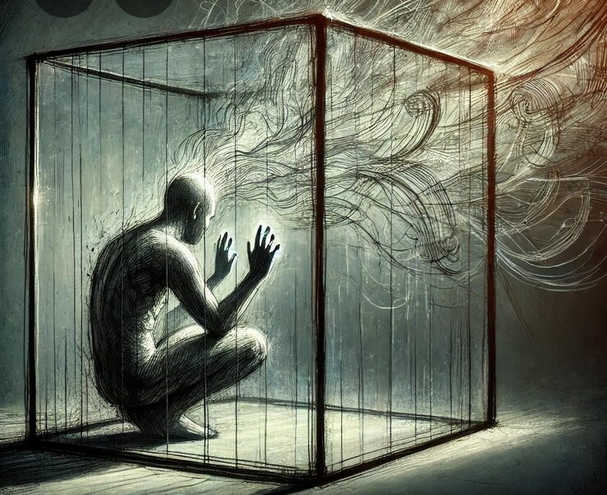

LE FUTUR

Malgré l'enfermement physique, se libérer de l'enfermement mental.
LA TENDRESSE
On peut vivre sans richesse
Presque sans le sou
Des seigneurs et des princesses
Y en a plus beaucoup
Mais vivre sans tendresse
On ne le pourrait pas
Non, non, non, non
On ne le pourrait pas
On peut vivre sans la gloire
Qui ne prouve rien
Être inconnu dans l’histoire
Et s’en trouver bien
Mais vivre sans tendresse
Il n’en est pas question
Non, non, non, non
Il n’en est pas question
Quelle douce faiblesse
Quel joli sentiment
Ce besoin de tendresse
Qui nous vient en naissant
Vraiment, vraiment, vraiment
Le travail est nécessaire
Mais s’il faut rester
Des semaines sans rien faire
Eh bien, on s’y fait
Mais vivre sans tendresse
Le temps vous paraît long
Long, long, long, long
Le temps vous paraît long
Dans le feu de la jeunesse
Naissent les plaisirs
Et l’amour fait des prouesses
Pour nous éblouir
Oui mais sans la tendresse
L’amour ne serait rien
Non, non, non, non
L’amour ne serait rien
Quand la vie impitoyable
Vous tombe dessus
On n'est plus qu’un pauvre diable
Broyé et déçu
Alors sans la tendresse
D’un cœur qui nous soutient
Non, non, non, non
On n’irait pas plus loin
Un enfant vous embrasse
Parce qu’on le rend heureux
Tous nos chagrins s’effacent
On a les larmes aux yeux
Mon Dieu, mon Dieu, mon Dieu
Dans votre immense sagesse
Immense ferveur
Faites donc pleuvoir sans cesse
Au fond de nos cœurs
Des torrents de tendresse
Pour que règne l’amour
Règne l’amour